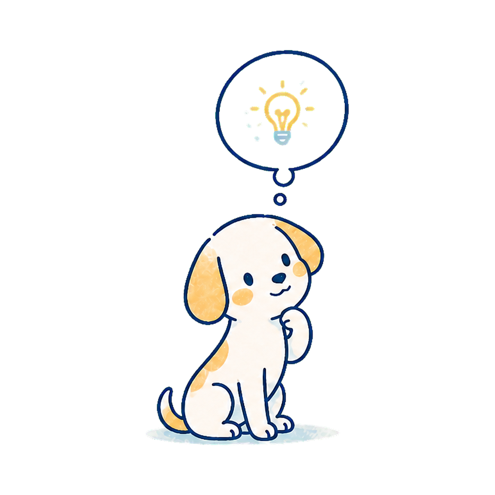
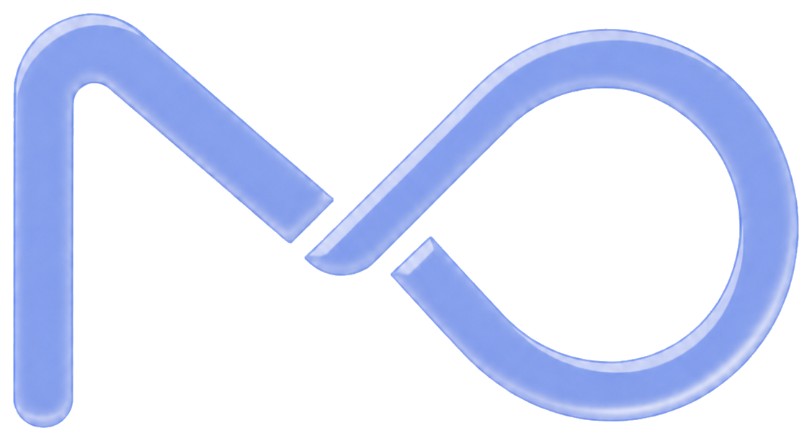
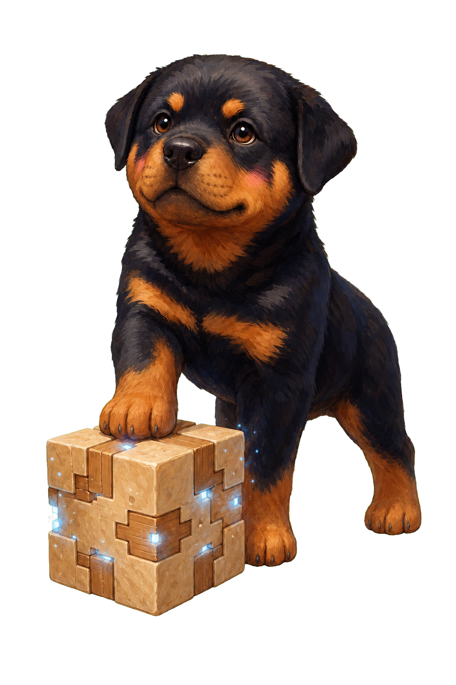
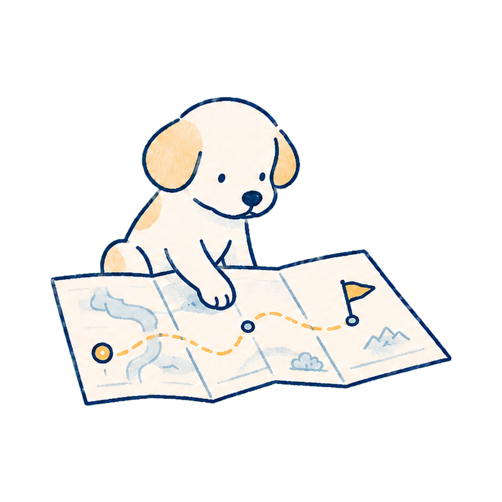
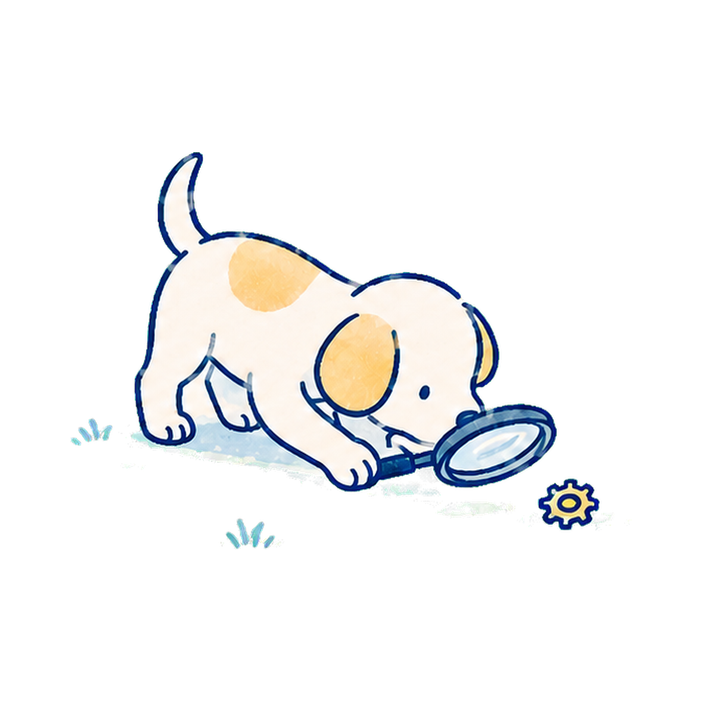
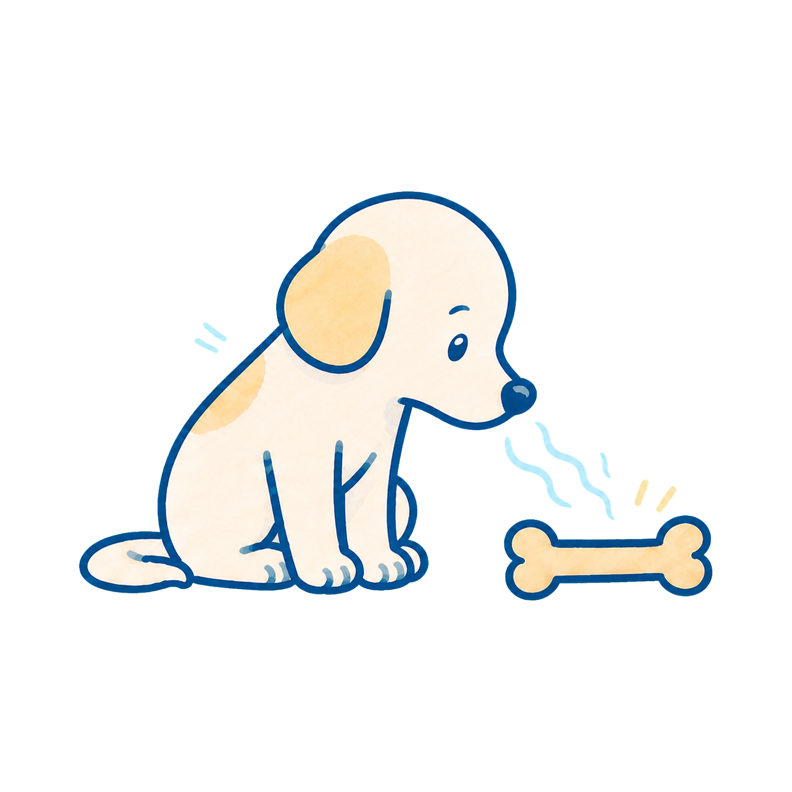
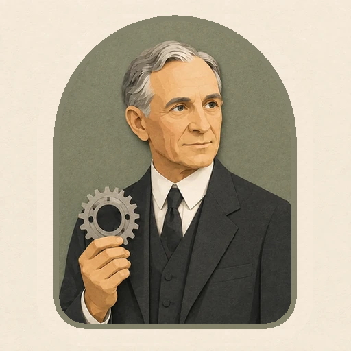
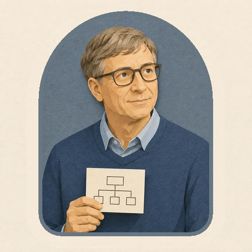
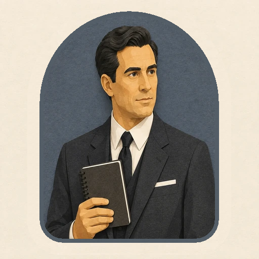
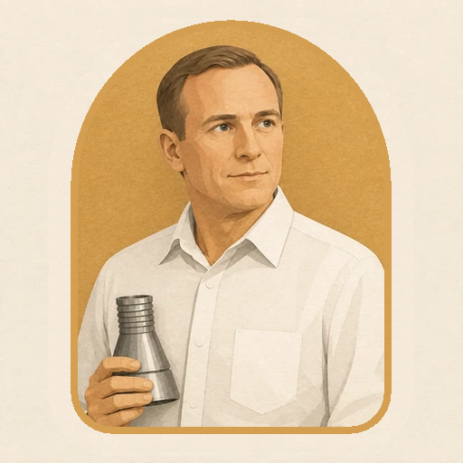

Clarity

Think it through Talk it through
Talk it throughPersonal User Manual

Historical reconstruction · Apollo 11


Think it throughTalk it through
Map the path Find the path
Find the path
Go deeper Go wider
Go wider
Understated Expressive
ExpressiveAn imagined manual reconstructed from public records. Not self-authored or an endorsement. View the evidence
I usually make an internal model first, then use expert exchange to test it—not to discover every thought aloud.
I build procedures, simulations, contingencies, and decision thresholds before commitment—then change course when the real vehicle disproves the model.
I range broadly enough to understand the system, then stay with the operational thread until the interfaces, failure modes, and tradeoffs hold together.
I prefer exact, low-drama language and distribute credit to the team. Public visibility is acceptable when it serves the work, not when it turns the work into self-display.
Talk it throughFind the pathGo widerExpressive
By reorganizing tools, people, and production flow, he turned complex manufacturing into a system that could run reliably and repeatedly at scale.

He spent decades building software platforms, organizations, and infrastructure designed to scale and remain useful over time.

He relies on long-term systems—tools, contingency plans, intelligence networks, and partnerships—to turn a complex mission into something that can keep operating under pressure.

Working within one of the most complex engineering systems ever built, he helped turn years of preparation, technical coordination, and disciplined execution into a reliable real-world outcome.
These are interpretive parallels based on public work—not verified assessments, affiliations, or endorsements.
As a Builder, you may be good at building the structure underneath the work, deciding how the different parts connect, and preparing for what should happen if one part fails.
Here are some jobs that may suit you:
I build an engineering picture of the whole system, test it against operations, and keep asking where the simulation stops matching the vehicle. Preparation narrows uncertainty; it does not eliminate judgment. When risk crosses a defined threshold, the objective changes from completing the mission to protecting the crew and craft.
I read widely, but with a working purpose: aviation, engineering, history, fiction, and whatever helps connect principle to operation. Checklists and concrete use cases teach me more than long abstractions detached from what an operator must actually do.
I write to make a decision or event inspectable: what happened, what the system did, where fidelity failed, and what should change. Public speeches receive research and revision, but the language stays economical, precise, and resistant to heroic inflation.
I communicate briefly and without theater, but I expect the underlying work to be deep. I listen to subsystem experts, make responsibilities explicit, and treat crew and Mission Control as one team. Disagreement belongs in tests, simulations, data, and clear decision ownership—not status contests.
I thrive with people who know their systems, surface bad news early, and keep working until the result is dependable. The best collaborators can own a specialty deeply while respecting the integrated mission and the commander’s final responsibility.
I work best around a difficult objective, excellent specialists, realistic practice, and room for operational judgment inside clear procedures. The environment should reward accurate reporting, repair weak interfaces, and keep attention on the mission rather than personal rank or visibility.
I combine an engineer’s system model with a pilot’s feel for the real vehicle. That lets me prepare methodically, notice when reality departs from the plan, and make calm operational decisions without confusing bravery with persistence or personal credit with mission success.
I protected useful work from the distortions of celebrity by limiting public exposure. The cost is that restraint can leave necessary institutional arguments to others. Growth means entering important public or policy conversations earlier, while keeping claims bounded by evidence and actual expertise.
I want exploration to remain a disciplined human project: ambitious enough to extend capability, rigorous enough to deserve trust, and humble enough to remember the thousands of hands inside every success. Teaching and public service let hard-earned operational knowledge become part of the next generation’s work.
Historical reconstruction: written in first person from public records, speeches, interviews, mission documents, and later recollections. It is neither Neil Armstrong’s self-authored manual nor a clinical assessment, testimonial, or endorsement.
Memova is an app that can continuously understand and manage your work context for your agents. This imagined manual shows how Memova can turn accumulated context into a starting point for understanding how someone thinks, communicates, decides, and collaborates. Memova will continue using these insights to tailor how it supports you—from the way information is organized and communicated to the suggestions, reflections, and experiences it creates for you.
As a person keeps using Memova, that understanding can become more nuanced and personal. The goal is not to place you in a fixed category, but to create an experience that increasingly recognizes how you work and what helps you thrive.